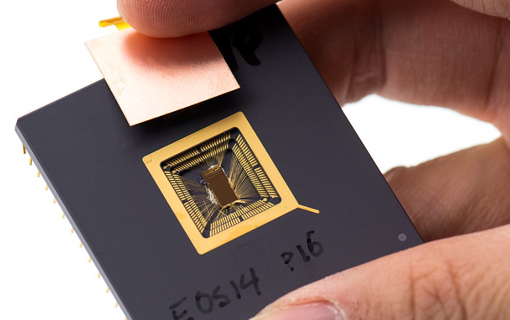

Arquitecturas y Organización de Computadoras I 2022

Docentes:
- Rafael Ignacio Zurita
- Rodrigo Cañibano
- Santino Castagno
Novedades:
Horarios: miércoles (teoría) y viernes (práctica) de 10hs. a 12hs. Lab 3 FAEA.
Parciales:
- 1er. parcial: notas
- 2do. parcial: ~11 de noviembre (viernes) 9:30AM
- Recuperatorio integral: ~25 de noviembre (miercoles) 10AM
- 1era. promocion: ~21 de septiembre (miercoles) 8AM
- 2da. promocion: ~25 de noviembre (viernes) 10AM
Grupos de telegram para moderación y comunicación online:
Telegram 2022
Trabajos prácticos
Programa
Programa de la materia
pdf con preguntas de repaso de Teoría
(se actualiza todas las semanas con nuevas preguntas)
- Introducción (UNIDAD 1)
- Eras tecnológicas. Limitaciones tecnológicas
- Tiempo de ejecución (rendimiento)
- Terminología: Arquitectura y Organización de un procesador. Avances
- Modos de direccionamiento
- MIPS/RISCV ISA (Arquitectura de una computadora real)
- Diseño digital (UNIDAD 2)
- Diseño lógico
- Máquinas algoritmicas
- Procesadores (UNIDAD 2)
- Diseño de un procesador
- Memoria (UNIDAD 3)
- Restricciones tecnológicas
- Jerarquía de memoria
- Memoria caché
- ENTRADA/SALIDA (UNIDAD 4)
- Tipos de dispositivos de E/S
- Programación de la E/S
- Avances arquitectonicos (UNIDAD 5)
- Paralelismo a nivel de instrucciones
- Diseño segmentado (pipeling)
- Factores que afectan el rendimiento (hazards)
- Paralelismo a nivel de procesadores
Apuntes
- UNIDAD 1
- UNIDAD 2
- UNIDAD 3
- UNIDAD 4
- UNIDAD 5
- Manuales